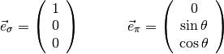
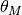
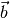
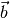
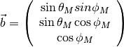

Geometry / Coordinate System¶
Geometry of Experiment¶
Within the PyXMRPackage following definitions for angles and stacking order are used:

The polarization vectors for  -polarization and
-polarization and  -polarization are
-polarization are

The y-z plane is defined / is identical with the scattering plane.
The polarization vectors for left and right circular polarizations are

Magnetization¶
Some parts of PyXMRTool deal with magnetization inside of the sample (SampleRepresentation.MagneticFormfactor and derived classes and SampleRepresentation.MagneticLayerObject).
There, the direction of the magnetization is given by the angles  and  . The direction of the magnetization as vector  is connected to them in the following way:
. The direction of the magnetization as vector  is connected to them in the following way:

So is the angle between and the z-direction. is the rotation from the scattering plane.
See Macke and Goering 2014, J.Phys.: Condens. Matter 26, 363201. Eq. 11-14 for details.